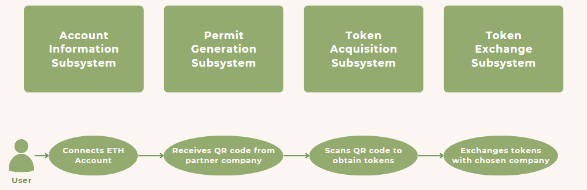

Dapp for Monetizing Green Activities
Tags: App Development, Blockchain, Cryptocurrency, Cryptography
For this project, I designed a mobile application where users can
mint tokens after performing "green" actions that are validated by
partner companies, and exchange their tokens for Eth from the partner
company of their choice. The project objectives of the project is to
produce a mobile application where users are able to collect
crypto-tokens and exchange them for money from companies, using
blockchain technology. For the Decentralized application(Dapp) to
function, users must be able to mint cryptotokens, check partner
company exchange rates, and exchange their tokens for Eth from the
partner company of their choice. Non-functional requirements include
scalability, security, privacy, and ease of use.
For environmental purposes, Proof of Work will not be used as it
wastes a lot of energy. Hence, Ethereum was chosen as the blockchain
platform for the backend, as it uses Proof of Stake which does not
waste as much energy. Latency depends on the blockchain used and the
number of active users. However, Ethereum 2.0 has the potential to
reach 100,000 transactions per second, which would directly translate
to a larger user base size that can be supported. Therefore, this
would meet the non-functional requirements. The development framework
of choice was Flutter, which is a open source framework by Google for
building multi-platform applications, allowing for the Dapp to be
built on Android, IPhone, Windows, MacOS, Linux, and Web. Flutter uses
its own programming language called Dart, which is a client-optimized
language for developing fast apps. The main plugins used are web3dart
for web3 functionality, mobile_scanner plugin for QR code scanning,
and flutter_secure_storage to store data securely. Finally, use
RemixIDE to compile and deploy the smart contract, as this only needs
to be done once. For the real world Dapp, truffle would probably be
used instead to deploy the smart contract on the mainnet.
For the purposes of this project, we will be using Ganache. Ganache
will create a simple private Ethereum blockchain along with 10
accounts initialized with 100 Eth. However for real world use cases,
the Ethereum mainnet will be used instead, and the accounts used will
be the personal accounts of users which they generate on their
personal wallet software. In this way, users will be able to access
the Eth they obtain from exchanging tokens. Metamask was used as an
example for the user's wallet, but as long as the user has their
private key, they will be able to use the Dapp.
In order to perform write functions to the Ethereum blockchain, the
user needs to have an Ethereum account as write functions incur
transaction fees. Therefore for this Dapp, we have to assume the user
has an existing Ethereum account with enough balance to cover
transaction fees is needed. Another assumption that needs to be taken
into account occurs when exchanging a small amount of tokens. As there
might be a situation where the transaction fees is higher than the Eth
earned, the user may lose Eth instead. For this Dapp, we have to
assume the user understands how transaction fees work and exchange
tokens in amounts that result in earnings larger than the transaction
fees.

The functions of the Dapp are split into multiple subsystems
according to different actions the user can take. The account
information subsystem provides Eth balance and token balance
information to the user. The permit generation subsystem allows the
partner company to generate a permit, send the permit_id,
permit_answers, permit_value to the smart contract, and send the
permit_id and permit_code to the user through a QR code.
permit_answers is an array generated in this way:
permit_answers[0] = kekkak265(permit+0) &
permit_answers[1] = kekkak265(permit+1) & ... &
permit_answers[N] = kekkak265(permit+N)
It is similar to adding salt, but allows us to increase the complexity
of performing an attack. The token acquisition subsystem allows the
user to mint the amount of tokens specified in the permit using the
permit_id and permit_code. Finally, the token exchange subsystem
allows the user to choose from a list of exchange rates provided by
partner companies and exchange their tokens for ETH.
The smart contract contains the logic and functions of the ERC-20
token for the user, the partner company, and the administrator. As
smart contracts manage value and are highly vulnerable to errors and
attacks, Openzepplin provides secure, tested, and audited standards
with very strict guidelines. Openzepplin's ERC-20 token standard and
access control was implemented in the smart contract. The ERC-20 token
standard allows the smart contract to mint new tokens, to be owned by
users, and be exchanged. Access control governs which functions the
user can use depending on their role. There are 3 roles defined in the
smart contract: DEFAULT_ADMIN_ROLE, PARTNER_COMPANY_ROLE, and the
user. The DEFAULT_ADMIN_ROLE deploys the smart contract and has the
ability to add or remove partner companies, withdraw royalties from
the smart contract, and modify the complexity of the permit hash to
increase the difficulty of an attack. Next, The PARTNER_COMPANY_ROLE
validates the user's green activity and generates a permit with value
of tokens equivalent to the "green" action. This value is calculated
through formal investigations and life cycle analysis done by the Dapp
company. The results will be public and transparent to prove the
token's validity as carbon credit. However, such calculations are
outside the scope of this project. The PARTNER_COMPANY_ROLE can also
add their funds to the smart contract and modify their exchange rates.
Lastly, the user is permitted to mint a specified number of tokens for
themselves, which is set when the permit was generated. The user can
choose their desired partner company to exchange their tokens with
from a list of all partner company data obtained from the blockchain,
and exchange their tokens to obtain Eth.
For testing purposes, the partner company Dapp was also made, which
is able to generate the permit, send it to the smart contract, and
show the QR code for the Dapp to scan. As we are using the private
blockchain on our personal computer, in order to access it on our
mobile app we port forward it to a website link which we can access on
our phones. For our case we use VS code to forward the private
blockchain port.
The purpose of using flutter as frontend framework was to develop an
multi-platform app to enhance user convenience. While the app
functions properly in android environment using physical android
device, the app was not tested in iOS. Since our app utilizes the
device's camera, it requires some additional permissions when run on
iOS device, which could not be tested. While not explicitly tested,
the app also functions on chrome as a web app, which would mean it
should function as long as the device has a camera. For testing
purposes Ganache was used to generate the private Ethereum blockchain.
However, if this was a real project, the smart contract would be
deployed to the Ethereum Mainnet. This also means fluctuating
transaction cost and processing time that depends on the traffic on
the Mainnet. With the current Ethereum, it may have issues handling
high numbers of active users, when they try to mint their tokens at
one time. However, once Ethereum fully upgrades with sharding, there
should not be this issue anymore. Security-wise, the app uses
flutter's secure storage package to store the user's private key. This
is because having the user to re-input their private key for every
time they want to scan the QR code is time consuming. However, this
could be a way for hackers to obtain access to the user's account
funds. Thus, this should also be improved to make the security more
robust. One way this can be done is to use a paper wallet, the app
scans a qr code or a NFC card to obtain the private key, which would
be faster.
Major objective of this project was to create a platform that provides
users the ability to earn money by being eco-friendly. While some
non-functional aspects of the Dapp can be improved, the functionality
of the Dapp have been successfully met. However, for this Dapp to run
as intended in the real world, it requires more than computer
engineers, it would probably also require lawyers, scientists, and
partner companies.